Imagine. Create. Share.
Craft your next breakthrough.


Bunifu Space is an innovative platform built by creators, for creators. We believe your project matters—not only to you, but to the world. We help creators communicate their ideas with clarity and purpose, transforming what many people overlook as ordinary gifts into compelling, beautifully designed innovations that create a positive impact on the world.
Build with UsBuilt around your vision.
Join our TeamTechnology should work with your goals—not against them. Whether you're launching a new idea, modernizing an organization, or creating your next digital product, we help turn ambition into reality.
Websites
Beautiful, responsive websites that communicate clearly and perform flawlessly.
Software
Custom platforms and app's built around the way your organization actually works.
Branding
Digital identities that inspire confidence and create meaningful connections.
AI and Automation
Smart systems that simplify workflows and create more time for what matters.
We build because
Great products aren't defined by how much they do—they're defined by how effortlessly they do it. We believe simplicity creates confidence, thoughtful design builds trust, and exceptional engineering transforms ordinary interactions into memorable experiences.
Take a TourWe tell stories
Behind every product is a story of curiosity, collaboration, and countless thoughtful decisions. We partner with organizations and founders to create digital experiences that solve real problems while remaining beautiful, accessible, and built to last.
See what we have BuiltThoughtful from the beginning.
Meet our TeamWe don't begin with technology — we begin with people. By understanding your goals, challenges, and ambitions, we create digital experiences that feel purposeful from the very beginning.
Discover
Understanding your goals, audience, and opportunities.
Define
Turning ideas into a clear strategy with measurable outcomes.
Design
Crafting experiences that are intuitive, beautiful, and purposeful.
Build
Developing reliable, scalable technology engineered for the real world.
Always exploring.
Never settle.
Innovation begins with curiosity. We constantly experiment with emerging technologies, interaction design, artificial intelligence, and creative ideas to discover better ways of building digital experiences.
Explore with UsDetails matter.
The smallest decisions often make the biggest difference.
From typography and motion to accessibility and performance, we consider every element with with care. Because remarkable products aren't remembered for being complicated—they're remembered for feeling effortless.
Find out MoreWorking Together.
Collaboration without complexity.
Every successful project is built on clear communication, thoughtful planning, and mutual trust.
We work closely with every client, ensuring every milestone reflects the original vision while remaining flexible enough to evolve as new ideas emerge.
Tell your story with UsBuilt on principles.
We create products that empower organizations, inspire creativity, and make technology feel more human for everyone who uses it.
Clarity
Making the complex feel simple.
Craftsmanship
Creating work we're proud of.
Curiosity
Exploring new ideas with an open mind.
Excellence
Never settling for "good enough."
The next great idea deserves exceptional execution.
Whether you're building your first product, transforming an existing organization, or imagining something entirely new, we'd love to help bring it to life. Let's build something remarkable together.
Start Your ProjectFrequently Asked Questions
What does Bunifuspace do ?
+We design and develop websites, software, digital products, and intelligent solutions that help businesses, organizations, and creators bring their ideas to life.
Who do you work with ?
+We work with startups, businesses, schools, nonprofits, and organizations looking for thoughtful digital experiences, whether they're launching something new or improving an existing product.
Can you build custom software ?
+Yes. Every solution is designed around your specific goals and workflows, ensuring the final product fits your needs rather than forcing you to adapt to generic software.
Do you only build websites ?
+No. In addition to websites, we create web applications, business systems, branding, user interfaces, AI-powered solutions, and interactive digital experiences.
What technologies do you use ?
+Our work is powered by modern technologies including HTML, CSS, JavaScript, PHP, Python, MySQL, Arduino, APIs, AI tools, and other technologies chosen to best fit each project.
How does a project begin ?
+Every project starts with a conversation. We take time to understand your vision, define the objectives, explore possibilities, and develop a clear plan before any design or development begins.
How can I work with Bunifuspace ?
+Simply get in touch through our contact page. Tell us about your idea, goals, or challenge, and we'll guide you through the next steps to turn your vision into reality.